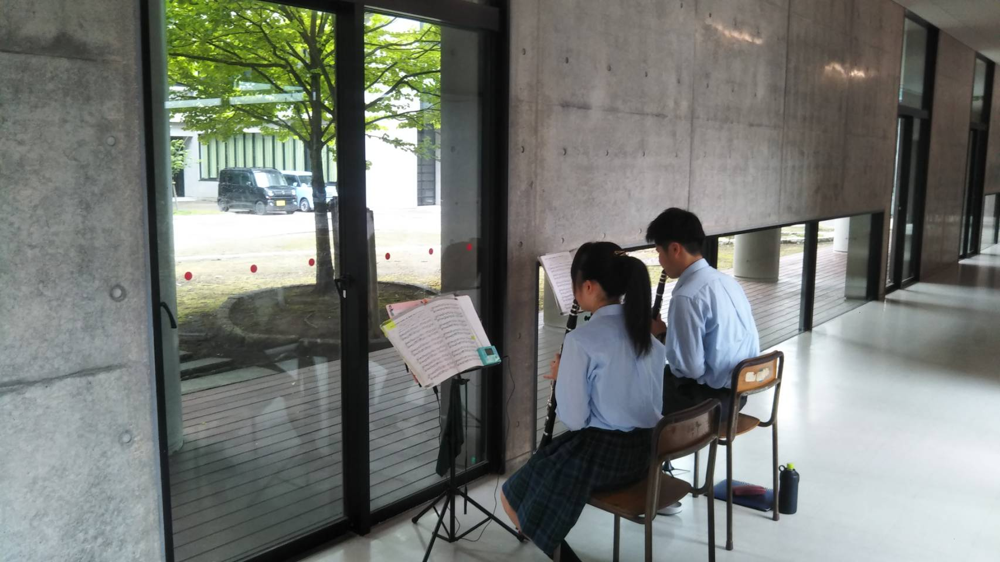
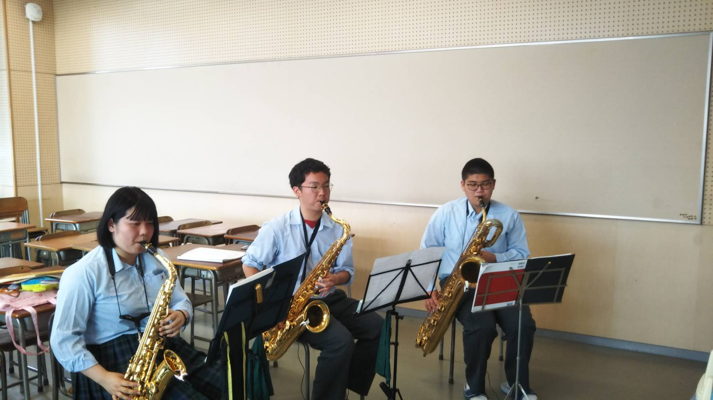
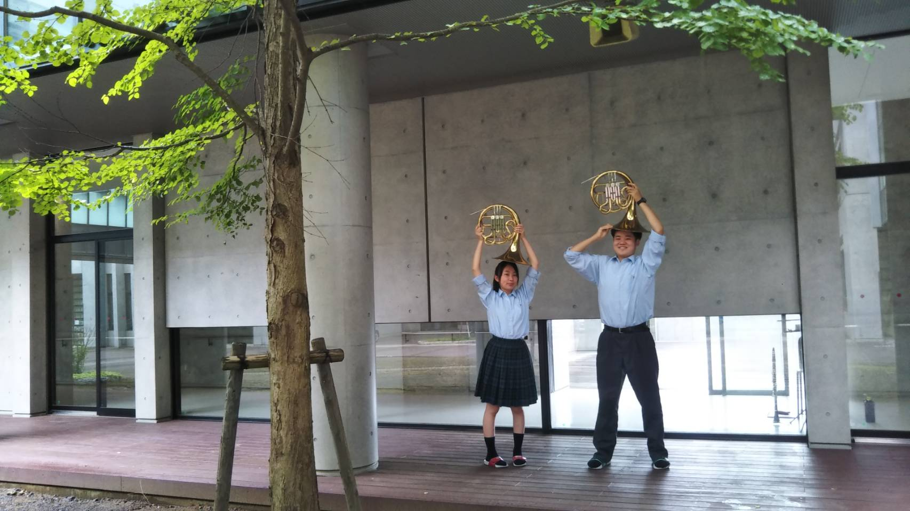

クラリネットパートです。
クラリネットは幅広い音域を出すことが可能です。また明るさを
感じさせる曲から暗さを感じさせる曲まで、様々な音色を奏でることが可能です。

アルトサックスパートです。
アルトサックスは色っぽい音や演歌のようなこぶしなど、
様々な表現をすることが可能です。コンクールや定期演奏会等でも
とても目立つ人気の楽器です。

ホルンパートです。
ホルンは金管楽器の中で最も最も広い音域を持つ楽器です。
ホルンの深い音はコンクールでもとても重宝され、メロディーの多い
人気の楽器です。
トランペットパートです。
金管楽器といったらトランペットを想像する人も多く、
吹奏楽をやってない人でも知っているとてもメジャーな楽器です。
主にメロディーを担当し、金管楽器の中でも無類の人気を誇ります。
ユーフォニアムパートです。
「よく響く」という意味の「ユーフォニアム」という単語がそのまま楽器の
名前となっています。よく響く音色からメロディー・伴奏問わずこなすことが可能で
ソロを任されることも多いとても人気の楽器です。
上記のパート以外の部員も随時募集しるので是非入部してください。